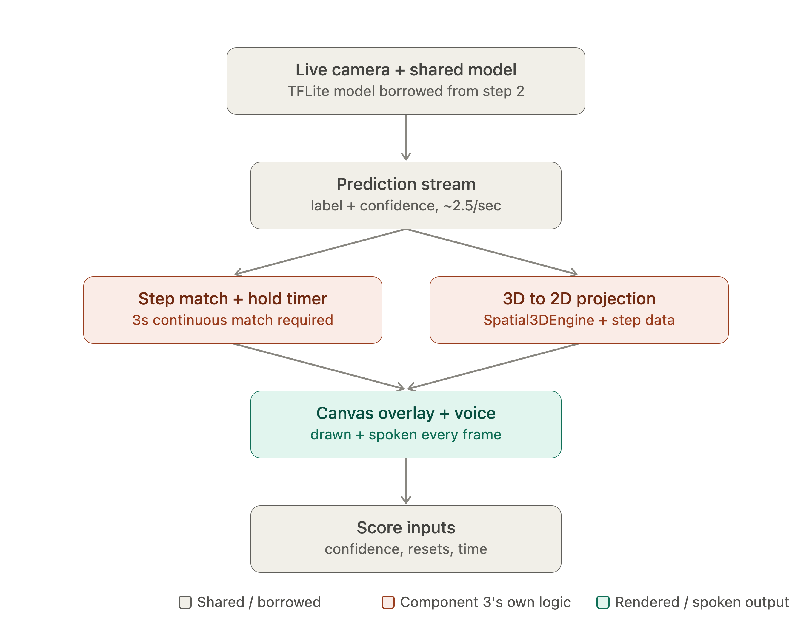
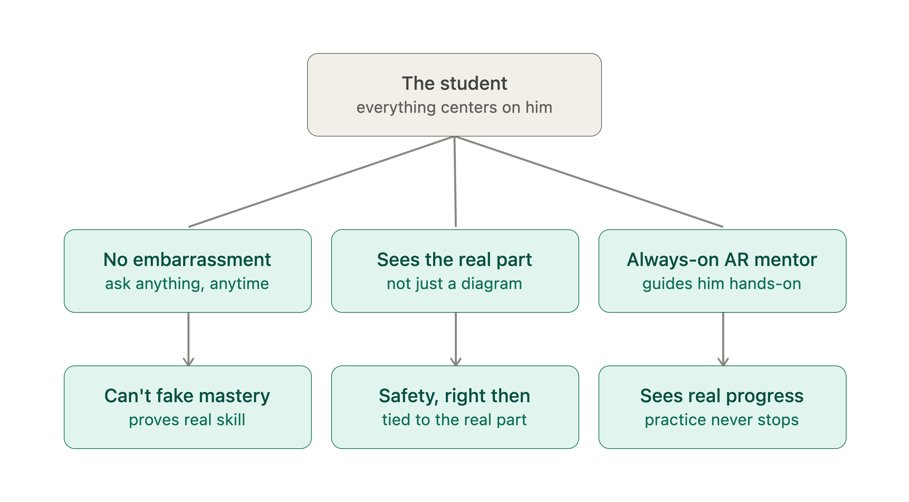

AutoLearnAR: An On-Device Augmented Reality & Edge-AI System for Automobile Repair Vocational Training
Abstract
Automotive vocational training traditionally relies on one-on-one instructor supervision, which is constrained by instructor availability, subjective grading variances, and late hazard interventions. While commercial enterprise AR systems offer immersive spatial guidance, their reliance on expensive dedicated optical headsets (e.g., Microsoft HoloLens) and continuous cloud network connectivity renders them inaccessible to technical training colleges and vocational workshops in resource-constrained environments.
This research introduces AutoLearnAR, an offline-first, smartphone-based digital supervisor that integrates on-device machine learning with spatial augmented reality to assist, verify, and evaluate trainees during mechanical repair procedures. Deployed on an entry-level smartphone (Redmi 9C) and validated against a physical Suzuki Alto 800L engine bay, the system achieves sub-150ms end-to-end inference latency, verifies repair actions with a 3-second temporal hold window, arrests 100% of tested hazard scenarios in real time, and exhibits an 89% score correlation with master technicians.
Interactive System Demonstration: Handheld AR Guidance Around Vehicle
Real-time simulation of an iPhone revolving in 3D around an automobile engine bay, detecting components, projecting 3D guidance, and executing the 3-second temporal hold verification loop.
Component 3 Execution Pipeline (Synchronized Runtime)
ACTIVE FLOWSystem Architecture & AR Guidance Pipeline
AutoLearnAR executes fully on-device without internet dependencies. Camera frames captured through Android CameraX are fed into a quantized MobileNetV2 classifier to establish visual context, link into procedural task graphs, render spatial AR perspective guidance, and evaluate safety via deterministic rules.

Cooperating Research Subsystems
The platform decomposes the vocational supervision challenge into four modular research components, developed collaboratively and integrated via typed Kotlin data contracts:
Part Identification
Markerless visual recognition of engine components under variable garage lighting using quantized INT8 MobileNetV2 models.
Task Recognition
Procedural workflow retrieval and deterministic repair state tracking mapping identified components to multi-step assembly schemas.
AR Guidance & Hold-Loop
Handheld 3D directional cue projection, Text-to-Speech audio coaching, and an automated 3-second temporal hold verification algorithm.
Safety & Evaluation
Deterministic rule engine intercepting live tool interactions to prevent hazardous steps, computing an objective 100-point performance score.
Empirical Evaluation Benchmarks
System performance was validated through physical experimental trials conducted on a Suzuki Alto 800L automobile under standard workshop conditions:
| Evaluation Metric | Target Baseline | Achieved Research Result | Evaluation Method / Testbed | Status |
|---|---|---|---|---|
| End-to-End Latency | < 200 ms | 78 ms – 150 ms | Frame acquisition to AR rendering on Redmi 9C | Achieved |
| AR Canvas Rendering | > 24 FPS | 26 FPS – 30 FPS | Jetpack Compose hardware-accelerated surface | Achieved |
| Average Memory Footprint | < 500 MB | ~380 MB | Android Studio Profiler (continuous execution) | Achieved |
| Safety Alert Trigger Time | Instantaneous | ~120 ms post-detection | Deterministic prohibited tool zone interception | Achieved |
| Usability Benchmark (SUS) | > 68 (Average) | 76.5 (Grade B+) | Standardized System Usability Scale (Trainee Cohort) | Achieved |
| Instructor Score Correlation | Strong agreement | 89% Correlation | Blind comparison with certified automotive trainers | Achieved |
Pedagogical Integration & Skill Verification
The system aligns with vocational education frameworks by bridging theoretical mechanical knowledge with practical workshop execution, enforcing safety standards while recording comprehensive student telemetry.
